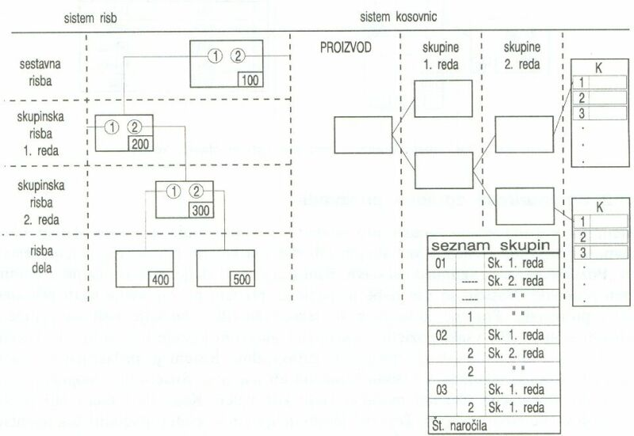

|
Naèin dokumentiranja s paralelno zgradbo izdelka omogoèa le dokumentiranje izdelave in sestavljanja izdelka, ki vsebuje skupine dveh redov, torej prvega in drugega reda. Skupine ali podsestavi drugega reda so sestavljeni le iz nedeljivih sestavnih delov. Tak naèin oznaèevanja torej ni primeren za veèje in bolj zapletene naprave, za katere je potrebno oblikovati veè ravni podsestavov ali skupin. Glavna sestavna risba in skupinske sestavne risbe podsestavov 1. in 2. reda nimajo svojih kosovnic. Na njih so le pozicijske številke. To so pozicijske številke risb podsestavov ali delov, ki sestavljajo narisane skupine. Èe v skupini nastopijo standardni deli, so združeni v skupini 2. reda. Skupina 2. reda, ki je sestavljena iz standardnih elementov, nima risbe, paè pa le kosovnico. Èe vsebuje izdelek še kakšne druge podskupine, jih uvrstimo kot še eno skupino 2. reda. To storimo z novo paralelno kosovnico. Seznam skupin vsebuje tudi vse podatke o naroèilih materiala in o realizaciji teh naroèil. Kosovnice nosijo pozicijske številke kot tekoèe številke. Kosovnice vsebujejo tudi pripadajoèe številke risb, na katerih lahko sestavne dele najdemo. Pri tem naèinu dokumentiranja je omejitev najveèje mogoèe število redov skupin. To število znaša dve skupini. Vsaka kosovnica je sklenjena ali zakljuèena ter nima podkosovnic. Èe sestavni del ni oznaèen s številko risbe, je oznaèen z oznako, ki vsebuje: 1. številko skupine 1. reda, v kateri je del vkljuèen, 2. številko skupine 2. reda, v kateri je del vkljuèen, in številko pozicije tega sestavnega dela.  Paralelna zgradba stavka risb in kosovnic 1. Vprašanja za usmerjanje pozornosti in usvajanje novih besed: 1. V kakšnem primeru uporabljamo naèin dokumentiranja s paralelno zgradbo izdelka? 2. Koliko ravni skupinskih risb vidiš na zgornji sliki? 3. Koliko risb delov vidiš na zgornji sliki? 4. Koliko skupinskih risb 1. reda vidiš na zgornji sliki? 5. Koliko skupinskih risb 2. reda vidiš na zgornji sliki? 2. Zapiši od ene do pet kljuènih besed, ki povzemajo vsebino te uène enote. 3. Vprašanja za razmislek, ponavljanje in povezovanje z lastno izkušnjo: 1. Zapiši besede v besedilu te uène enote, ki jih ne razumeš! 2. Si morda besede, ki jih ne razumeš, sreèal/a že kdaj prej? V kakšnih okolišèinah in s èim v zvezi? 4. Domaèa naloga: V enem do petih stavkih zapiši, kaj ti je v tej uèni enoti najbolj ostalo v spominu. |